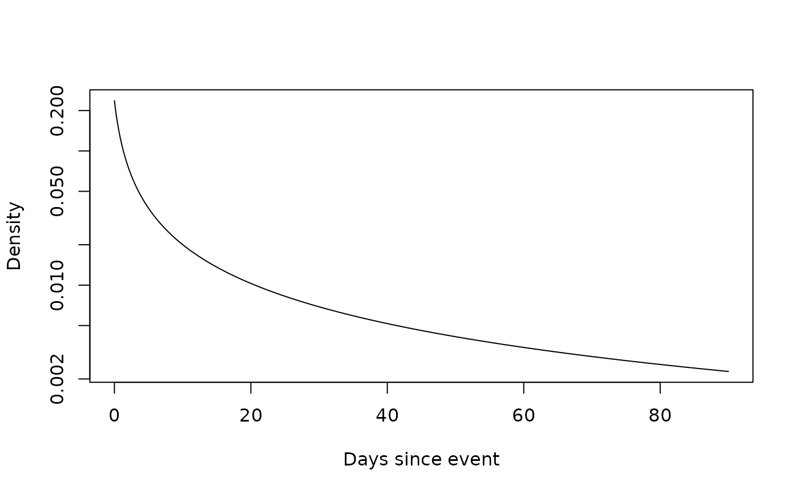

Initial (parametric) temporal triggering-function guess
Source:R/trigger.R
trigger_temporal_init.RdBuilds the Loop-0 power-law temporal triggering kernel
\(g(t) = (\text{offset} + t/\text{scale})^{\text{exponent}}\), normalized
to integrate to 1 over [0, cutoff] via simpson().
Arguments
- cutoff
Maximum time lag considered, in days; default
90.- step
Grid step for
base, in days; default0.05.cutoff / stepmust be an even whole number (1800 for the defaults), so that the grid ends atcutoffand has the odd number of pointssimpson()needs.- offset, scale, exponent
Power-law shape parameters: \(g(t) = (\text{offset} + t/\text{scale})^{\text{exponent}}\). Defaults (
0.1,10,-1.03) match the original script.
Value
A list of class "semihawkes_trigger_temporal" with base (the
time-lag grid), basevalue (normalized kernel values), and fun (a
vectorized evaluator, 0 outside [0, cutoff]).
Examples
g <- trigger_temporal_init()
g
#> <semihawkes_trigger_temporal>
#> 1801 points over [0.00, 90.00] days
plot(g$base, g$basevalue, type = "l", log = "y",
xlab = "Days since event", ylab = "Density")
